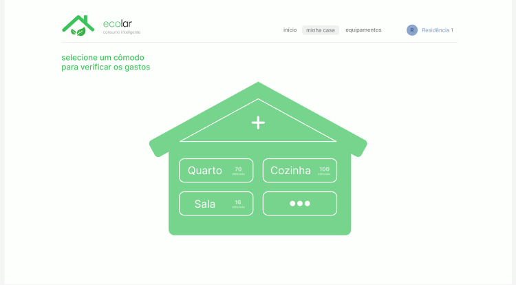
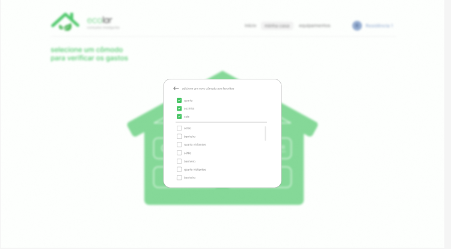

ideias e protótipos
Galeria da casa interativa
Imagens de referência da equipe que documentam a proposta visual original do EcoLar.


Estas imagens mostram protótipos de interface e não representam medições de consumo nem fotografias de residências reais. Experimente a versão interativa implementada.